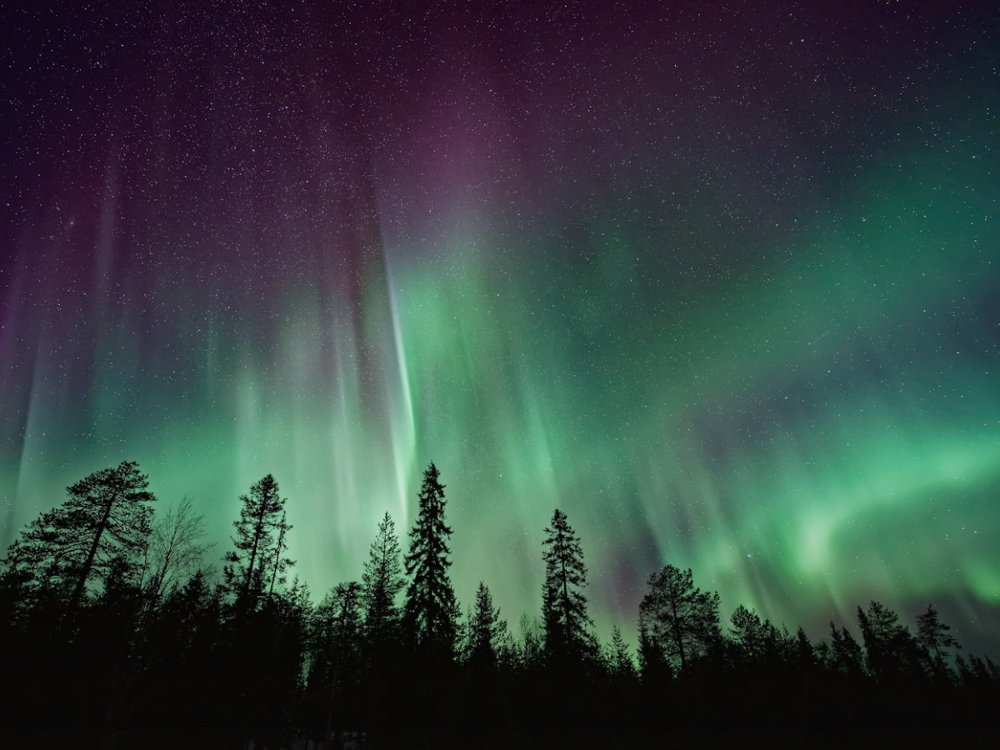

1/6
北欧极光之旅
挪威 · 瑞典 · 芬兰
在北欧追逐极光，探索峡湾、冰雪森林与童话小镇，体验纯净自然与北欧风情。
建议天数
8-12天
最佳季节
11月-3月
预算等级
中高
包含国家
🇳🇴
挪威
Norway
🇸🇪
瑞典
Sweden
🇫🇮
芬兰
Finland
推荐城市
奥斯陆
挪威
斯德哥尔摩
瑞典
赫尔辛基
芬兰
+3
更多城市
路线亮点
追寻极光
在极光带最佳位置，邂逅绚丽极光
峡湾与自然
挪威峡湾、冰川与雪山的壮丽景观
童话城市
北欧经典城市，感受北欧风情与历史
冰雪体验
雪地活动、狗拉雪橇、冰酒店等独特体验
相关路线
查看更多 ›
北欧冬季秘境
10天 · 挪威/瑞典/芬兰
芬兰童话之旅
6天 · 芬兰
挪威峡湾之旅
7天 · 挪威